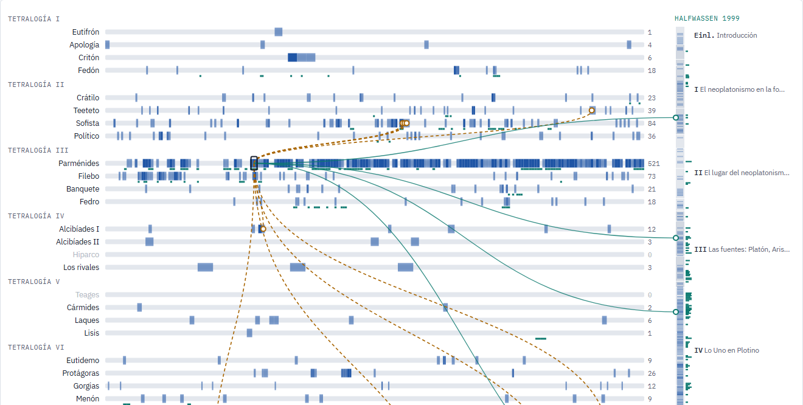

Humanidades digitales · Filosofía · Herramienta web
Navegador de textos: Platón

Pregunta
¿Cómo seguir un concepto de Platón de un diálogo a otro, y ver qué pasajes elige un intérprete moderno para leerlo?
Resultado
Los 36 diálogos en griego e inglés, alineados en 8,553 secciones Stephanus. El libro de Halfwassen cita 409 de ellas, pero las dos que más cita, República 509b y Sofista 248e, no contienen ninguno de los tres términos: su lectura de lo Uno pasa por el Bien y el ser.
Qué hice
Una herramienta web para leer a Platón por conceptos y no solo obra por obra. Tiene dos ejes: en horizontal, cada diálogo es una barra según la paginación de Stephanus, la forma estándar de citar a Platón; en vertical, el libro de Jens Halfwassen sobre Hegel y el neoplatonismo, de la primera a la última página.
- Tres términos: ἀρετή (virtud, 611 apariciones), ἕν (lo Uno, 1,251) y νοῦς (intelecto, 409). Al elegir uno, las barras marcan dónde aparece y el libro muestra dónde trata el mismo concepto en alemán.
- Tres tipos de conexión: las remisiones que los traductores hicieron en sus notas, los ecos de vocabulario entre pasajes de diálogos distintos y las citas de Platón en el libro.
- Dos formas de leer: obra por obra, en orden, o saltando de un diálogo a otro y del libro a Platón, como en Rayuela. El recorrido queda anotado.
- Lentes temáticas que muestran con qué aparece cada término; por ejemplo, ἀρετή junto a «enseñar» o ἕν junto a «límite e ilimitado».
- Cada pasaje se lee en griego y en inglés, con el término resaltado.
Cómo se hizo
Los textos son los archivos XML de Perseus Digital Library: la edición griega de Burnet y la traducción inglesa de la Loeb, unidas por sección Stephanus. Las apariciones se cuentan sin distinguir acentos, pero conservando el espíritu áspero para no confundir ἕν («uno») con ἐν («en»). Las remisiones salen de las notas de los traductores, y los ecos comparan el vocabulario poco frecuente de cada par de pasajes (TF-IDF). En el libro, un programa lee las citas de Platón en su formato alemán («Politeia 509 B», «Parm. 137 C») y solo conserva las que corresponden a una sección existente.
Limitaciones
- Los ecos comparan palabras, no ideas: no ven la misma idea dicha con otras palabras y a veces unen pasajes por coincidencias de contexto.
- No usa un lematizador del griego: las raíces de las palabras son aproximadas.
- La mayoría de las remisiones viene de las notas de Shorey a la República; los demás traductores anotaron menos.
- El texto del libro viene de un reconocimiento óptico: algunas citas se pierden y el griego del libro no es legible.
- El libro tiene derechos reservados. La herramienta guarda solo su índice, sus páginas y sus referencias; para leer una página citada hay que vincular un ejemplar propio en PDF.
Fuentes
Platón: Perseus Digital Library, Tufts University, con licencia CC BY-SA 4.0. Jens Halfwassen, Hegel und der spätantike Neuplatonismus (Hegel-Studien, Beiheft 40), Felix Meiner Verlag.